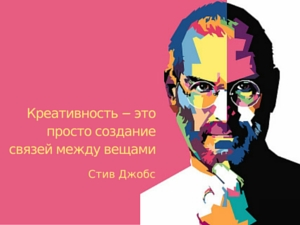

Креативность (от лат. creatio — творчество) — умение человека отступать от стандартных идей, правил и шаблонов. К тому же креативность предполагает присутствие прогрессивного подхода, воображения и оригинальности. Прослеживается в различных видах деятельности, её продуктах, а также в отдельных сторонах качества личности. «Креативность» и «Творчество» — схожие, но не одинаковые понятия. Творчество — это процесс создания предметов искусства человеком. Креативность же является особым обязательным условием для занятия творчеством. В результате чего, творческая личность всегда обладает креативностью, это неотъемлемая её часть. Вот ссылка на полную статью: Я здесь
Дизайн (от англ. design — проектировать, чертить, задумать, а также проект, план, рисунок) — деятельность по проектированию эстетических свойств промышленных изделий («художественное конструирование»), а также результат этой деятельности (например, в таких словосочетаниях, как «дизайн автомобиля»)[1].
Мнение автора сайта:"Это отличный предмет для развития внимания, пространственной памяти. Как развлечение(лично для меня) - штука классная. Для меня, как для человека который целый день в экране телефона, планшета или компьютера - идеальный вариант". История История кубика Рубика началась в марте 1970 года, когда Ларри Николс изобрел куб-головоломку 2×2×2 с вращающимися частями, собранными на магнитах. Изобретатель сразу подал заявку на оформление канадского патента и уже 11 апреля 1972 года Николс получил американский патент под номером 3655201 (позднее, в 1986 году апелляционный суд подтвердил, что карманный кубик Рубика 2×2×2, по причине сходства изобретений, нарушает авторские права Николса). 9 апреля 1970 года Франк Фокс подаёт заявку на сферическую головоломку 3×3×3, и 16 января 1974 года получает патент (1344259)[2].В середине 1970-х Эрнё Рубик работал в отделе Дизайна интерьера в академии Прикладного искусства в Будапеште. Ему никак не удавалось втолковать студентам математическую теорию групп. Занимаясь группами, Рубик однажды сделал 27 деревянных кубиков, раскрасил каждый в шесть цветов. Неожиданно оказалось довольно трудно сложить из них один куб, чтобы каждая грань была окрашена в свой цвет. Сам Рубик бился над задачей целый месяц (хотя сообщается, что первый кубик Рубика был построен как обучающий инструмент, чтобы помочь его студентам понять трехмерные объекты, фактически первоначальная цель Рубика заключалась в решении проблемы структурного перемещения независимых частей). Но самым сложным оказалось придумать механизм, который состоял из 26 кубиков (в центральном не было необходимости) и структурного крепления[3]. 30 января 1975 года Э. Рубик получил венгерский патент (HU170062) на своё изобретение, «Магический кубик» (Bűvös kocka).Первые партии кубиков Рубика были выпущены в конце 1977 года для Будапештского магазина игрушек. Игрушкой совершенно случайно заинтересовался[когда?] немецкий компьютерный предприниматель венгерского происхождения Тибор Лаци (зайдя в кафе во время деловой поездки в Венгрию выпить кофе, он увидел занимательную вещицу в руках у официанта). Увлекающийся математикой Лаци пришёл в восхищение от игрушки и буквально на следующий день прибыл уже в государственную торговую фирму Konsumex и предложил продавать кубик на Западе. Тогда же он познакомился и с Рубиком. Заинтересованный Тибор Лаци вышел на владельца Seven Towns Ltd., англичанина Тома Кремера (Tom Kremer), также венгра по линии матери. Кремер взялся добиться привлечения интереса к разноцветному чуду.В сентябре 1979 года, на переговорах в Будапеште, был заключён договор с крупной американской компанией Ideal Toy Corporation (позже куплена корпорацией CBS) на поставку в США одного миллиона кубиков. В процессе переговоров всплыла ещё одна проблема — Кубик был запатентован лишь в Венгрии. Американцы же могли торговать товарами, авторские права на которые официально зарегистрированы на территории США. Чтобы хоть как-то уладить это препятствие, в самом начале 1980-го «Магический куб» (Magic Cube) решено было переименовать в кубик Рубика (Rubik’s Cube).[прояснить]Стараниями Лаци и Кремера в январе — феврале [1980 год]а состоялся международный дебют кубика. В феврале 1980 года головоломка дебютировала на ярмарках игрушек Лондона, Парижа, Нюрнберга (Nuremberg Toy Fair) и Нью-Йорка. Американская премьера состоялась 5 мая в Голливуде, а представляла кубик венгерская кинозвезда Габор. Следующие два года стали временем всемирного помешательства, в связи с дефицитом кубов стали производиться подделки в самых разных странах. Только до конца 1982 г. было продано свыше 100 миллионов официальных кубиков и в полтора раза больше подделок. Никаких проблем со сбытом головоломки не было, были проблемы с производством. Венгрия физически не могла делать больше нескольких миллионов штук в год. Фабрики по изготовлению кубиков открываются в Гонконге, Тайване, Коста-Рике и Бразилии. В Советский Союз кубик пришёл в 1981 г.В 1980 году Кубик Рубика получил венгерский национальный приз за лучшее изобретение и выиграл конкурсы на лучшую игрушку в США, Великобритании, Германии, Франции. Популярность головоломки росла. Сложность сборки кубика вызвала к жизни поток специальных изданий по проблеме: было выпущено более 60 книг. От непрерывной многочасовой игры у людей попросту сводило запястья. Во многих ресторанах кубик входил в число обязательных предметов сервировки стола наряду с солонкой и перечницей. Появилось «Искусство кубика Рубика» (Rubik’s Cube Art) — художники собирали не только сами кубики, но уже из кубиков собирали свои произведения. В 1981 году в Англии проходит церемония представления кубика принцу Чарльзу и леди Диане (тогда же выходит ограниченным тиражом версия, посвящённая их свадьбе, состоявшейся 29 июля 1981, «Royal Puzzle»), головоломка попадает в экспозицию Нью-йоркского музея современного искусства, а годом позже кубик Рубика попадает в Оксфордский словарь.Сегодня права на кубик Рубика и другие головоломки Эрнё Рубика принадлежат английской компании Seven Towns Ltd., которой уже 40 лет владеет близкий друг Эрнё Рубика — Том Кремер[4][5]. Под контролем англичан кубик Рубика производится и продаётся во всем мире. Первые оригинальные кубики Рубика были целиком из цельного пластика. Позже стали производить детали, используя полость внутри. Подавляющее большинство головоломок производится в Китае (иногда в Тайване или Гонконге). Также головоломки делают в Германии (Мефферт), Японии (Кацухико Окамото), Греции (Вердес Панайиотис, V-cube), Украине (Разумный кубик/Smartcube, Одесский куб) и некоторые в России. До 1997 года существовал производитель в США Ideal toys, сделавший головоломку звезда Александера. Ссылка
Моргенште́рн (Morgenshtern, а также Женщина года*), настоящее имя Алише́р Таги́рович Моргенште́рн (при рождении Вале́ев; род. 17 февраля 1998, Уфа), — российский рэп- и поп-исполнитель, музыкант, шоумен[3].Первую известность получил в 2018 году благодаря пародиям на популярных музыкальных исполнителей того времени, которые публиковал на YouTube. В 2019 году отказался от данного формата и начал выпускать только авторские музыкальные релизы, построив свою дальнейшую карьеру исключительно на них. Творчеству исполнителя предшествуют различные пиар-акции, а его образ, перформансы и различные действия не раз становились объектом внимания СМИ, государственных деятелей и других[⇨]. *- победил на "Topical Style Awards 2020" в номинации "Женщина года"
Фото шоумена с премией "Женщина года"